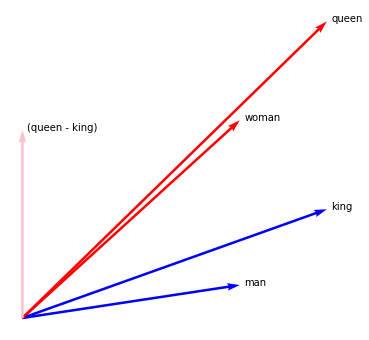

What Are Embeddings
Imaginary Tokens¶
Let's make a few word-embeddings. The basic object for this is a Token object.
from whatlies import Embedding
foo = Embedding("foo", [0.5, 0.1])
bar = Embedding("bar", [0.1, 0.2])
buz = Embedding("buz", [0.3, 0.3])
These are all embedding objects. It has a name and a vector. It also has a representation.
foo # Emb[foo]
We can also apply operations on it as if it was a vector.
foo | (bar - buz) # Emb[(foo | (bar - buz))]
This will also change the internal vector.
foo.vector # array([ 0.50, 0.10]
(foo | (bar - buz)).vector # array([ 0.06, -0.12])
But why read when we can plot? The whole point of this package is to make it visual.
for t in [foo, bar, buz]:
t.plot(kind="scatter").plot(kind="text");

Meaning¶
Let's come up with imaginary embeddings for man, woman, king and queen.
We will plot them using the arrow plotting type.
man = Embedding("man", [0.5, 0.1])
woman = Embedding("woman", [0.5, 0.6])
king = Embedding("king", [0.7, 0.33])
queen = Embedding("queen", [0.7, 0.9])
man.plot(kind="arrow", color="blue")
woman.plot(kind="arrow", color="red")
king.plot(kind="arrow", color="blue")
queen.plot(kind="arrow", color="red")
plt.axis('off');

King - Man + Woman¶
We can confirm the classic approximation that everybody likes to mention.
man.plot(kind="arrow", color="blue")
woman.plot(kind="arrow", color="red")
king.plot(kind="arrow", color="blue")
queen.plot(kind="arrow", color="red")
(king - man + woman).plot(kind="arrow", color="pink")
plt.axis('off');

King - Queen¶
But maybe I am interested in the vector that spans between queen and king. I'll use the - operator here to indicate the connection between the two tokens.
Notice the poetry there...
man.plot(kind="arrow", color="blue")
woman.plot(kind="arrow", color="red")
king.plot(kind="arrow", color="blue")
queen.plot(kind="arrow", color="red")
(queen - king).plot(kind="arrow", color="pink", show_ops=True)
plt.axis('off');

Man | (Queen - King)¶
But that space queen-king ... we can also filter all that information out of our words. Linear algebra would call this "making it orthogonal". The | operator makes sense here.
man.plot(kind="arrow", color="blue")
woman.plot(kind="arrow", color="red")
king.plot(kind="arrow", color="blue")
queen.plot(kind="arrow", color="red")
(queen - king).plot(kind="arrow", color="pink", show_ops=True)
(man | (queen - king)).plot(kind="arrow", color="pink", show_ops=True)
plt.axis('off');

Embedding Mathmatics¶
This is interesting. We have our original tokens and can filter away
the (man-woman) axis. By doing this we get "new" embeddings with
different properties. Numerically we can confirm in our example that
this new space maps Emb(man) to be very similar to Emb(woman).
(man | (queen - king)).vector # array([0.5, 0. ]
(woman | (queen - king)).vector # array([0.49999999, 1e-16. ]
The same holds for Emb(queen) and Emb(man).
(queen | (man - woman)).vector # array([0.7, 0. ]
(king | (man - woman)).vector # array([0.7, 0. ]
More Operations¶
Let's consider some other operations. For this we will make new embeddings.
man = Embedding("man", [0.5, 0.15])
woman = Embedding("woman", [0.35, 0.2])
king = Embedding("king", [0.2, 0.2])
man.plot(kind="arrow", color="blue")
woman.plot(kind="arrow", color="red")
king.plot(kind="arrow", color="green")
plt.xlim(0, 0.5)
plt.ylim(0, 0.5)
plt.axis('off');

Mapping Unto Tokens¶
In the previous example we demonstrated how to map "away" from vectors.
But we can also map "unto" vectors. For this we introduce the >> operator.
man.plot(kind="arrow", color="blue")
woman.plot(kind="arrow", color="red")
(woman >> man).plot(kind="arrow", color="red")
(woman >> king).plot(kind="arrow", color="red")
king.plot(kind="arrow", color="green")
plt.xlim(0, 0.5)
plt.ylim(0, 0.5)
plt.axis('off');

Measuring the Mapping¶
Note that the woman vector in our embedding maps partially unto man and
overshoots a bit on king. We can quantify this by measuring what percentage
of the vector is covered. This factor can be retreived by using the > operator.
woman > king # 1.3749
woman > man # 0.7522
Interesting¶
This suggests that perhaps ... king and man can be used as axes for plotting?
It would also work if the embeddings were in a very high dimensional plane.
No matter how large the embedding, we could've said woman spans 1.375 of
king and 0.752 of man. Given king as the x-axis and man as the y-axis,
we can map the token of man to a 2d representation (1.375, 0.752)
which is easy to plot.
This is an interesting way of thinking about it. We can plot high dimensional vectors in 2d as long as we can plot it along two axes. An axis could be a vector of a token, or a token that has had operations on it.
Note that this > mapping can also cause negative values.
foo = Embedding("foo", [-0.2, -0.2])
foo.plot(kind="arrow", color="pink")
woman.plot(kind="arrow", color="red")
king.plot(kind="arrow", color="green")
(foo >> woman).plot(kind="arrow", color="red", show_ops=True)
plt.xlim(-.3, 0.4)
plt.ylim(-.3, 0.4)
plt.axis('off');

foo > woman # -0.6769
Plotting High Dimensions¶
Let's confirm this idea by using some spaCy word-vectors.
import spacy
nlp = spacy.load('en_core_web_md')
words = ["cat", "dog", "fish", "kitten", "man", "woman", "king", "queen", "doctor", "nurse"]
tokens = {t.text: Embedding(t.text, t.vector) for t in nlp.pipe(words)}
x_axis = tokens['man']
y_axis = tokens['woman']
for name, t in tokens.items():
t.plot(x_axis=x_axis, y_axis=y_axis).plot(kind="text", x_axis=x_axis, y_axis=y_axis)

The interesting thing here is that we can also perform operations on these words before plotting them.
royalty = tokens['king'] - tokens['queen']
gender = tokens['man'] - tokens['woman']
for n, t in tokens.items():
(t
.plot(x_axis=royalty, y_axis=gender)
.plot(kind="text", x_axis=royalty, y_axis=gender))

The idea seems to work. But maybe we can introduce cooler charts and easier was to deal with collections of embeddings.